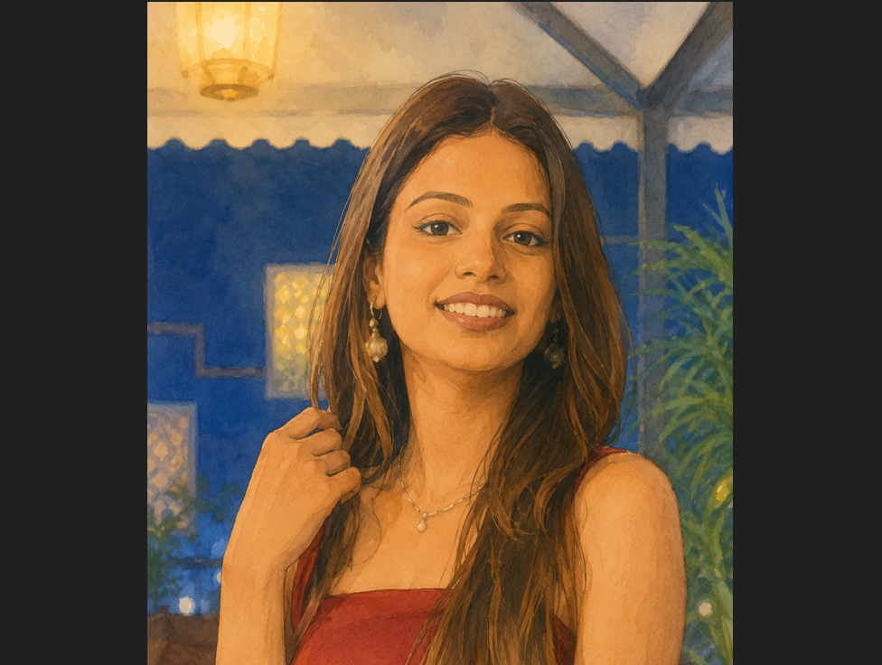
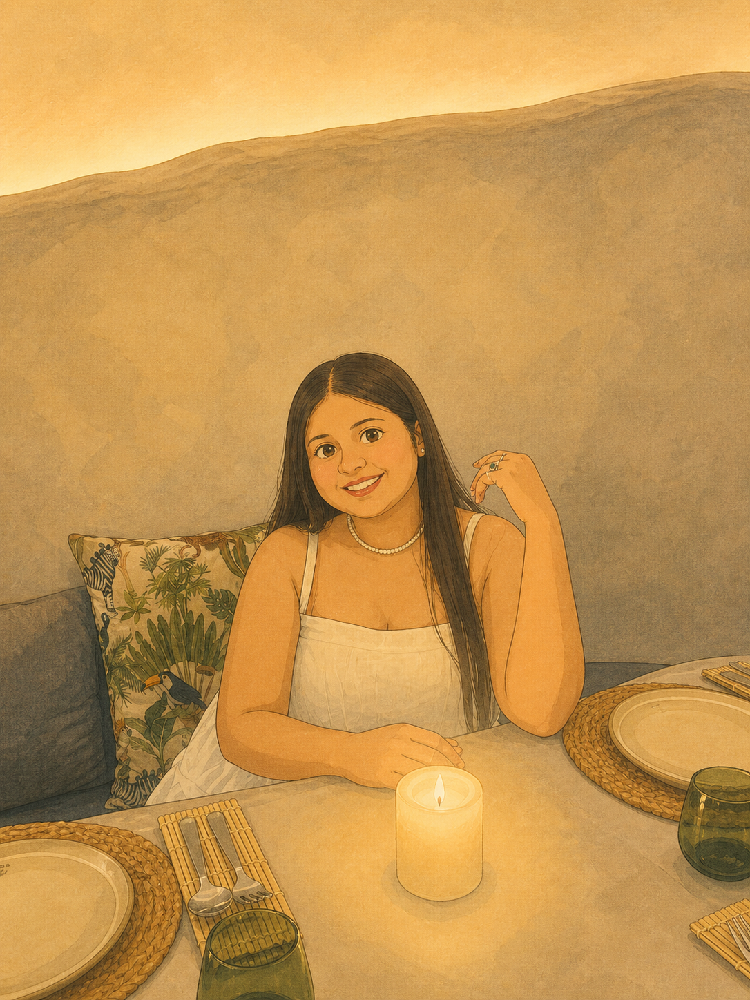
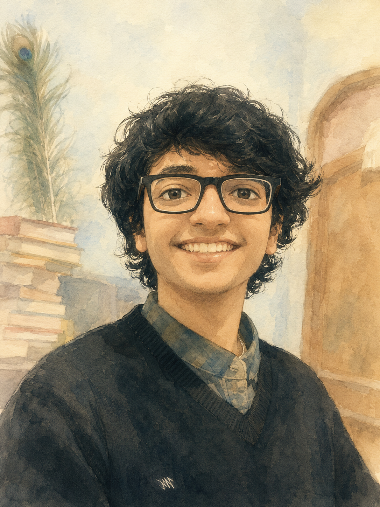
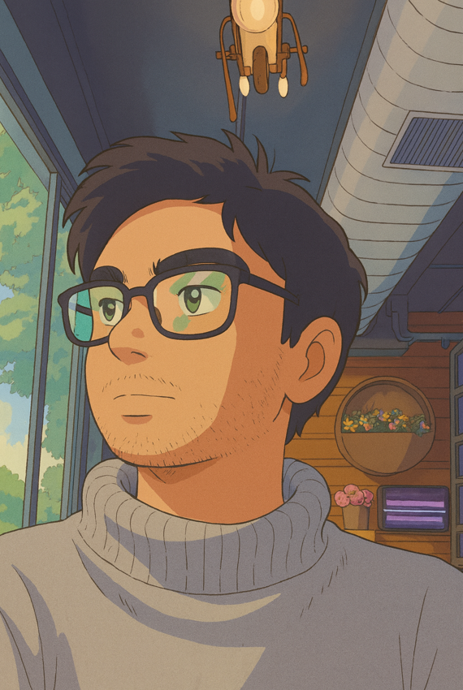
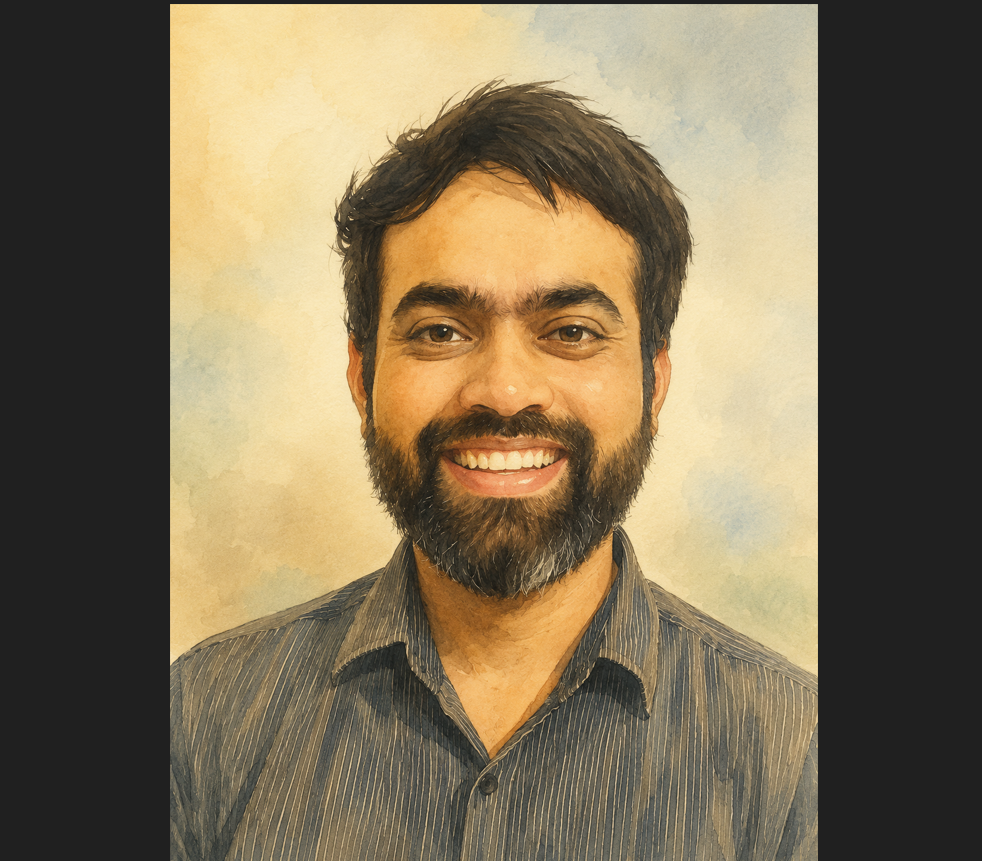
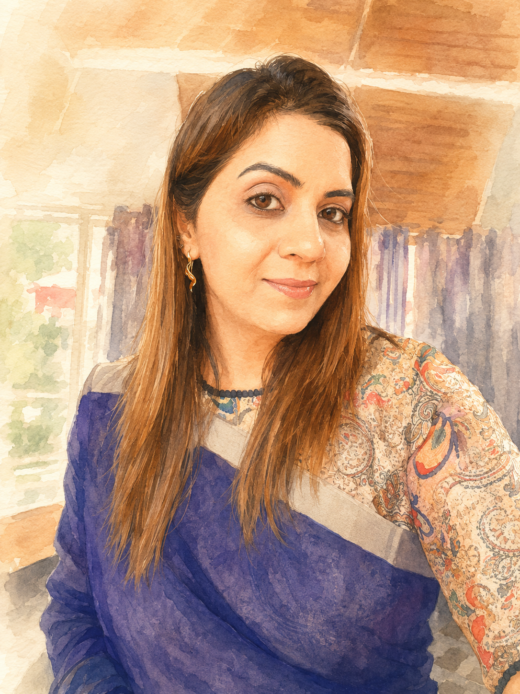
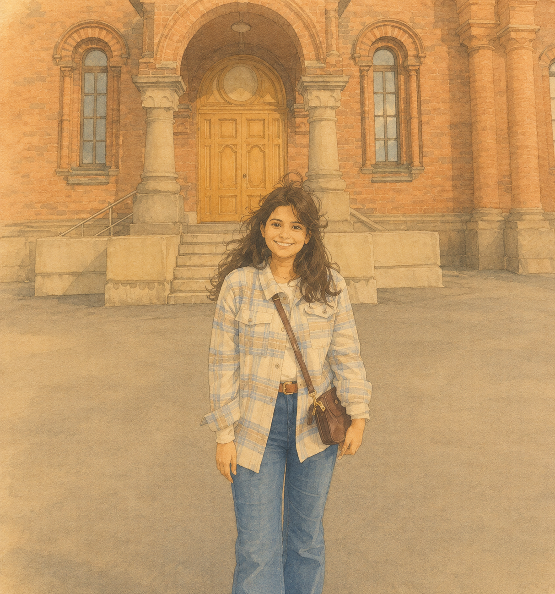
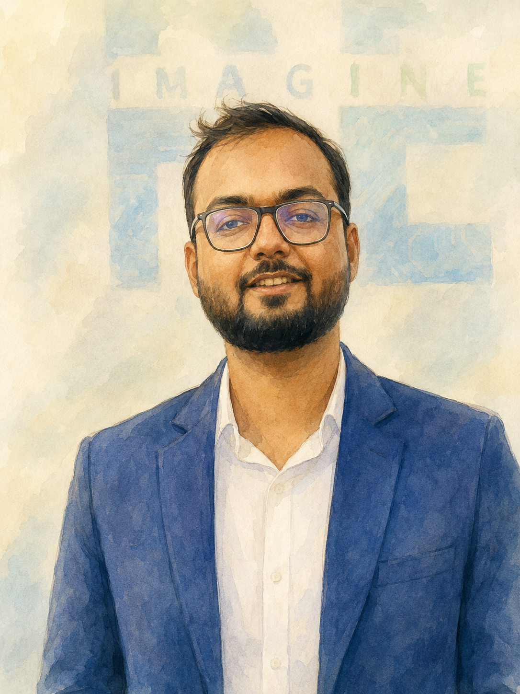

Doctoral Researcher
Megha works on rare disease biomarker discovery, beginning from ALS. She would be integrating genomic, transcriptomic, and methylomic signals to decode early molecular signatures of neurodegeneration in ALS

Doctoral Researcher (Joint with PGIMER, Chd)
Kraticka is working on innovative multi-omics investigations, analyzing transcriptomic, proteomic, and metabolomic data in patients undergoing compromised heart function. Her investigation would aim to unveil biomarkers for Acute Coronary Syndrome and coronary atherosclerosis

Doctoral Researcher
Keshav is working on blood–brain barrier transporter modeling, where he would employ structural biology, ligand screening, and molecular dynamics to understand how transporters regulate metabolite movement across the BBB.

Research Fellow
Ankit works on image informatics and building algorithms for automated interpretation of bone-marrow histopathology, which would help understand machine augmented interpretation. This can enable machine-augmented insights into functional biology and disease trigger events.

Postdoctoral Researcher
Paras is working on germline cancer variant curation initiative, focusing on Indian population genetics. He is working on systematically integrates literature mining, genomic datasets, and FAIR-compliant pipelines to build variant repositories, that would enable comparative molecular and population-scale analyses.
Where our former members are today.

Postdoctoral Fellow
2023–2025
Now: Asst. Prof. Amity Mohali

Research Fellow
2024–2025
Now: Doctoral Researcher, University of Helsinki

Research Fellow
2023–2024
Now: MD VKCAPITALS PVT. LTD.